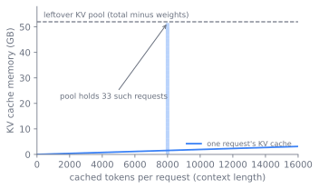

服务问题
训练好的模型是一个文件；被服务的模型则是一套带着时钟与预算的系统。推理会分裂成预填充与解码两个阶段，而二者对硬件的胃口恰好相反；延迟与吞吐量彼此拉扯；真正的目标是有效吞吐量（goodput），而非二者中任何单独一个；KV 缓存则是整个服务层为之存在、为之调度的稀缺资源。读者读完本章，就能明白这些为何如此。
最后一点是本章的脊梁。其余的一切，那两个阶段、那些延迟指标、服务引擎的整部历史、每一个运维旋钮，到头来都是一场围绕同一块加速器内存的争夺。我们顺着这条线索走下去：从取舍诞生之处，到为它定价的目标，再到为它封顶的资源，最后走过那些已学会在这道界限之内生活的引擎与旋钮。
一个必须守时的文件
预训练只花一次算力，造出一个权重文件。服务却要永远花算力，每当一个用户发来请求就花一次，而且是在用户能感觉到的时钟下花。问题不再是最小化某个损失，而是把一组固定的权重跑在一条请求流上，让每个请求返回得足够快，集群又满载得足以养活自己。
有两种延迟定义了什么叫「足够快」，而它们不是同一个数。首词元时间（TTFT）是用户在答案的第一个片段出现之前要等多久。每输出词元时间（TPOT），有时也叫词元间延迟，是流开始之后每个后续词元要花多久。聊天界面需要短的 TTFT，好让回复显得及时；长生成需要短的 TPOT，好让文本不结巴。这两个时钟并非随意定下的产品目标，它们源于同一次前向传播分裂成两个对硬件胃口相反的阶段。
预填充与解码的相反胃口
请求到来时，模型先读完整个提示词。这是预填充（prefill）阶段：所有提示词词元在一次传播中被一起处理，每个位置都注意到每个更早的位置，这是一串大的矩阵-矩阵乘法。预填充是计算受限的，它榨满加速器的算术单元，成本随提示词长度增长。TTFT 本质上就是预填充所花的时间。
随后模型一次一个地吐出答案。这是解码（decode）阶段：每一步把最近的那一个词元送过网络，产出下一个，这是一串细长的矩阵-向量乘法。解码受限于内存带宽，而非算力。每步的算术量极小，但每步都得把完整的权重矩阵、以及不断增长的过去键值缓存从内存里流式读出，主导时间的是这次流式读取，而非算术。这道屋顶线分裂，预填充顶着算力上限、解码顶着带宽上限，是推理性能的那条组织性事实 (Yuan et al. 2024; Pope et al. 2022)。TPOT 本质上就是每步的解码延迟，而一个空转的解码步会让加速器的大部分算力闲置。
图 18.1 把一个请求追踪着穿过两个阶段，并为每个阶段对齐其算术的形状、它榨满的资源、以及它设定的延迟指标。
flowchart LR
req["请求到来"] --> pf
subgraph pf["预填充（一次传播）"]
pfa["所有提示词词元一起"]
pfb["矩阵-矩阵乘法"]
pfc["计算受限"]
pfa --> pfb --> pfc
end
pf -->|"设定 TTFT"| dec
subgraph dec["解码（每步一个词元）"]
deca["只有最新词元"]
decb["矩阵-向量乘法"]
decc["内存带宽受限"]
deca --> decb --> decc
end
dec -->|"循环至停止，设定 TPOT"| dec
dec --> done["答案流式输出"]读者也许会问，这个分裂为何如此要紧。它要紧，是因为两个阶段想从硬件那里得到相反的东西，而它们跑在同一份硬件上。预填充想被喂以足够的工作量，好让算术单元保持忙碌。解码想把更多请求批在一起，好让一次昂贵的权重流式读取一次为许多用户产出词元。批处理就是那根杠杆，它把带宽受限的解码翻转成计算高效的：权重读一次，然后摊销到批中的每个请求上 (Pope et al. 2022)。于是吞吐量，即所有用户合计的每秒词元数，随批大小上升，而任一单个用户所见的延迟，会随批被填满而恶化。服务问题就是这种取舍的具体化。之后的每一节，都是同一种尝试：从批处理里赢得吞吐量，又不花掉任何一个用户的延迟预算。
单一数字的谎言
人们很想去追逐某个头条指标，可两个显而易见的候选，吞吐量和延迟，单独拎出来看都具有误导性。吞吐量统计集群产出的每一个词元，延迟统计一个用户要等多久，二者都不是业务目标。一台服务器可以靠激进批处理报出巨大的吞吐量，激进到每个单独请求都错过自己的截止期；它也可以靠在空闲硬件上一次只跑一个请求，报出极小的延迟。能经受现实检验的目标是有效吞吐量（goodput）：在各自延迟目标之内完成请求的速率。一个请求一旦冲破自己的 TTFT 或 TPOT 预算，其后产出的词元就不算有用的工作。有效吞吐量，是只在满足服务等级目标（SLO）的请求上统计的吞吐量。
有效吞吐量重新框定了之后的每一个决策。调度器的任务，是把尽可能多的请求打包到加速器上，同时不把其中任何一个推过它的 SLO。这是一个带硬约束的装箱问题，而约束由内存设定。要看清为何如此，得先问问解码被迫留着什么。
缓存就是那道约束
第 步的注意力需要所有更早位置的键与值。与其每步重算，服务器不如把它们缓存下来。这就是 KV 缓存。它的大小由架构固定，而非由服务层固定：
其中 是层数， 是键值头数， 是头维度， 是每元素字节数， 是被缓存的词元数。因子二是为键与值。缓存随序列长度线性增长，也随并发请求数线性增长，而且它住在与权重同一份稀缺加速器内存里。这道挤压现在就看得清了：权重占去一块固定的内存切片，剩下的全部在当前在飞的各请求的 KV 缓存之间瓜分。能批进多少请求，从而吞吐量与有效吞吐量的上限，取决于剩下多少 KV 缓存内存、以及用得多有效。图 18.3 展示了这道划分，而 图 18.2 把这种线性增长及其后果具体化：每个请求的缓存随上下文长度沿一条直线上升，剩下的池则定死了能同时容纳多少个这样的请求。

这就是为什么架构章的注意力变体对一个服务工程师如此要紧。多查询注意力（MQA）与分组查询注意力（GQA）缩小 ，多头潜在注意力（MLA）压缩被缓存的状态，每一种都直接削减每词元的 KV 字节数。它们的设计，部分正是为了松开这道服务约束。至于 增长到数十万时会发生什么，第 22 章 会再回来谈。
第 7 章 通过层数、头几何、以及多查询、分组查询或潜在注意力的选择所固定下来的那个 KV 缓存，正是这个服务层必须调度的那个确切资源。这里没有任何东西能自由地重新设计那个缓存；架构把它传了下来，调度器在它之内生活。箭头也反向运行，并合上了一个在 第 4 章 开启的回路：这里所度量的解码成本，在模型的整个生命周期里每词元付一次，正是它证明了应当把一个更小的模型过度训练到远超其计算最优点。一个词元训练起来便宜、服务起来昂贵，于是服务层的经济学反向触及栈的上层，重塑了一个看似纯属预训练的决策。
围绕一份资源的四场争夺
一旦把缓存认定为那道绑定约束，服务引擎的历史读起来就像一连串少浪费它一点的争夺。服务栈是靠一次去掉一处浪费，才得到它如今的形状的，而每一次去掉，在成为一个内核之前，都先是一个调度思想。
别再占着一个已完成请求的槽位。 最早的系统像 Web 服务器服务 HTTP 那样服务请求：攒一个批，跑到完成，返回这个批。这是请求级批处理，它把加速器浪费得很厉害，因为批中一个短生成早早完成，然后空转着等最长那个生成跑完，同时占着它的槽位。Orca 用迭代级调度取代了请求级批处理：调度器在单个解码步的粒度上决定跑什么，于是一个完成的请求立刻离开批，一个新到的请求无需等其余请求就能加入 (Yu et al. 2022)。这个思想，广泛地被称为连续批处理，是每个现代引擎的地基。
别再预留用不上的缓存。 迭代级调度暴露了下一个瓶颈，那就是内存。连续批处理能在槽位一打开的瞬间就接纳一个请求，但前提是有 KV 缓存内存来容纳它，而早期引擎按最大可能长度，为每个请求分配一整块连续内存。多数请求远短于那个最大值，于是多数被预留的内存空着，把内存池碎片化，把批大小压在远低于硬件能跑的水平。PagedAttention 与 vLLM 引擎从操作系统那里借来了虚拟内存的分页：把 KV 缓存存进固定大小的块，这些块不必连续，随序列增长按需分配块，并让一张块表把逻辑位置映射到物理块 (Kwon et al. 2023)。碎片化坍缩，批增大，吞吐量在相同延迟下据报上升两到四倍 (Kwon et al. 2023)。那套分页的机制、以及它如何让跨请求的前缀共享成为可能，第 19 章 会专门展开；在这里，看见上文点名的那道内存压力逼出了这个设计，就够了。
别再让一次预填充卡住解码。 最近的一个转折正面迎击预填充与解码之间的紧张关系。接纳一个新请求会跑一次昂贵的预填充，与已在飞的解码们争抢：偏向预填充则 TTFT 改善，而在跑的请求结巴；偏向解码则 TTFT 攀升，而进行中的流保持顺滑。因为一次预填充是一阵大的计算爆发，一个解码步是小的，把它们混在一个批里，会让一次预填充把排在后面等待的解码们卡住，让它们的 TPOT 尖刺。出现了两族答案。Sarathi-Serve 把两个阶段留在同一份硬件上，但把每次预填充切成块、与进行中的解码交错，于是没有解码被一个长提示词卡住 (Agrawal et al. 2024)。DistServe 走了另一条路，把两个阶段拆分到分开的加速器池上，于是预填充干扰根本碰不到解码延迟，代价是要在池之间运送 KV 缓存 (Zhong et al. 2024)。二者都明确地在优化有效吞吐量，而非原始吞吐量，这正是为什么分块预填充与拆分，是停止必须在 TTFT 与 TPOT 之间做选择的两种有原则的办法。
要把预填充与解码拆分到分开的硬件上，还是把它们留在一起并交错，这是真正未定论的。拆分（DistServe）消除了预填充与解码的相互干扰，让每个阶段独立地扩展与并行，在每输出词元时间目标紧、而首词元时间目标松时胜出 (Zhong et al. 2024)。带分块预填充的聚合（Sarathi-Serve）让 KV 缓存留在本地，避免了在池之间转移它的代价，在相反的 SLO 平衡下、以及在更低的请求率下胜出 (Agrawal et al. 2024)。近期工作主张这个选择并非二选一，调度器应当随负载与 SLO 的变动，在两种模式之间切换，或将其统一。正确的默认取决于模型规模、池之间的互连带宽、请求构成、以及哪个 SLO 是那道绑定约束，所以把拆分当作一个取决于负载与 SLO 的选择，而非一个已成定论的赢家。
余下的旋钮在何处权衡
上面那两个预填充与解码的答案，解决了服务的一道取舍。还剩三道，每一道都在延迟、吞吐量或内存之间，用一个去换另一个，而 KV 池坐在它们全体之下。
-
批大小：吞吐量与延迟。 更大的解码批把权重流式读取的成本摊销到更多请求上，抬高吞吐量，但它消耗更多 KV 缓存内存、拉长每一步，抬高 TPOT。正确的批是仍能满足 TPOT SLO 的那个最大批，而它随请求长度变化而移动。图 18.4 把两条曲线对着批大小画出来：吞吐量带着递减的回报朝一个带宽受限的上限攀升，TPOT 则上升，被选中的批就坐在 TPOT 触及其预算的那一点。

图 18.4. 解码批大小权衡的示意：吞吐量带着递减的回报朝一个内存带宽上限攀升，而每词元延迟（TPOT）上升，所以最好的批是仍在 TPOT SLO 之下的那个最大批。理想化数值，仿 Pope et al. (2022)。 -
KV 缓存内存与被接纳的请求。 花在权重上的内存装不了 KV 缓存，花在缓存一个长上下文请求上的内存接纳不了一个新请求。当池满时，引擎必须要么拒绝或排队新请求，要么逐出并稍后重算一个被暂停请求的缓存，用内存压力换重算成本。
-
延迟下限与利用率。 留着加速器空闲作储备，能保护 TTFT 抵御突发，但浪费了服务之所以存在、本要变现的那份算力。有效吞吐量正是为这笔取舍定价的那个函数，因为它只在利用率产出满足 SLO 的完成时才统计它。
那个循环，以及它报告什么
一个服务引擎，其核心是一个循环：每次迭代选出一组要跑的请求，对它们跑一个模型步，并释放任何已完成请求的资源。下面这个形状，就是 Orca 引入、而每个现代引擎都在精炼的连续批处理循环 (Yu et al. 2022)。
# One iteration of a continuous-batching scheduler (sketch).
while running or waiting:
# Admit new requests while KV-cache blocks are free and SLOs allow.
while waiting and kv_pool.can_allocate(waiting.peek()):
running.add(waiting.pop()) # its prefill joins this step
batch = scheduler.select(running) # may chunk prefills, cap by memory
outputs = model.step(batch) # one prefill/decode pass
for req in batch:
req.append(outputs[req])
if req.is_finished():
kv_pool.free(req.blocks) # return blocks to the pool
running.remove(req)
承重的决策不在模型步里，而在接纳请求与选择批的那两行里。kv_pool.can_allocate 是内存约束变成一个调度决策的地方，而 scheduler.select 是延迟-吞吐量权衡被敲定的地方：靠为 TPOT 封顶批大小，靠把预填充切块使其不卡住解码，靠针对 SLO 排序。一个真实引擎里对应的逻辑住在引擎步里，例如 vllm.LLMEngine.step, vllm/engine/llm_engine.py，块记账则在缓存管理器里。
要紧的运维指标直接从问题里来。TTFT 与 TPOT 按请求度量，并作为百分位、而非均值来跟踪，因为一次尾部错过就是一次 SLO 错过。有效吞吐量是头条数字，按每秒满足 SLO 的完成数计算。KV 缓存利用率与抢占率，即引擎因内存耗尽而不得不暂停、稍后再恢复一个请求的频率，便表明当前是内存约束还是计算约束在绑定。当抢占攀升，缓存就是瓶颈，修法是架构性的、在 第 19 章 里；当加速器满载而延迟尚可，吞吐量就是前沿，修法在 第 20 章 与 第 21 章 里。
透过本书一直携带的那面透镜：服务是能力遇见它的价格之处，因为一个模型只有能在延迟预算之内被服务时，才交付出一种行为；效率是全部的游戏，因为每加速器的有效吞吐量正是让一种能力负担得起的东西；而信任以 SLO 本身的形式进入，即一个请求会准时返回的承诺，调度器必须在它没有选择的负载下守住它。
延伸阅读
- Yu et al., “Orca: A Distributed Serving System for Transformer-Based Generative Models,” 2022. usenix.org
- Kwon et al., “Efficient Memory Management for Large Language Model Serving with PagedAttention” (vLLM), 2023. arXiv:2309.06180
- Agrawal et al., “Taming Throughput-Latency Tradeoff in LLM Inference with Sarathi-Serve,” 2024. arXiv:2403.02310
- Zhong et al., “DistServe: Disaggregating Prefill and Decoding for Goodput-optimized Large Language Model Serving,” 2024. arXiv:2401.09670
- Yuan et al., “LLM Inference Unveiled: Survey and Roofline Model Insights,” 2024. arXiv:2402.16363
- Pope et al., “Efficiently Scaling Transformer Inference,” 2022. arXiv:2211.05102